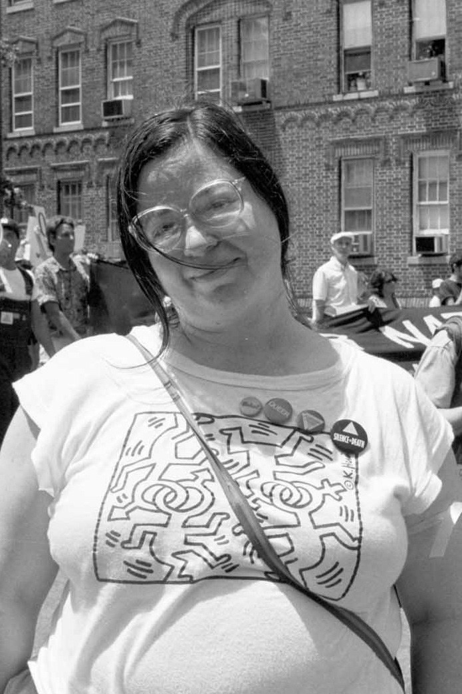
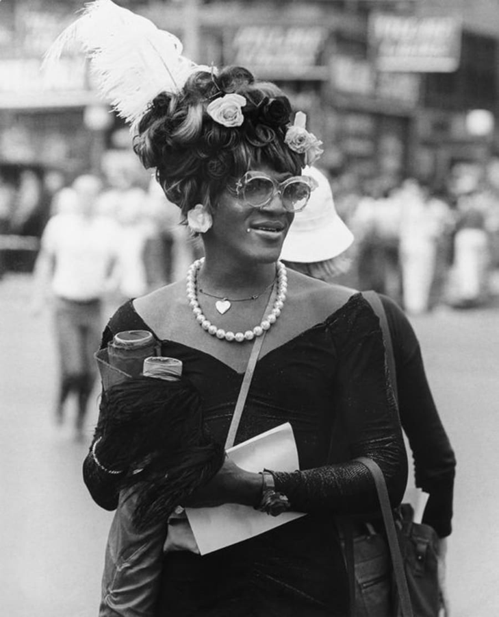

What is pride? Let's talk about it.
Pride, also known as Gay Pride or LGBTQ Pride, is the celebration of lesbian, gay, bisexual, transgender, and queer (LGBTQ) identity. Gatherings honoring Pride, such as pride parades, are rooted in the struggles that minority groups had to go through in order to be accepted by society and to overcome prejudice.
The Origins of Pride Month
On the evening of June 27th, 1969 - New York Police raided Stonewall Inn, a gay bar in Greenwich Village commonly frequented by queer people and drag queens. This was during a time where police were able to arrest and force hospitilization of queer people. Stonewall Inn patrons stood up to police intimidation and protested for the next week in advocacy of gay and trans rights. This movement came to be known as the Stonewall Uprisings and is credited as the birth of the Gay Civil Rights Movement. The first Pride parade in NYC, officially known as the Christopher Street Liberation march, occured on June 28th, 1970. This march, going from the West Village in Grenwich to Central Park, commemorated the courage of Stonewall patrons and the fight for Gay and Trans liberation. In 2000, June was offically declared as Gay and Lesbian Pride Month. In 2011, June was renamed Lesbian, Gay, Bisexual, and Trans Pride month.
Leaders of Stonewall
LGBTQ+ activist Brenda Howard organized the first Pride parade in New York City to commemorate the anniversary of the Stonewall Riots.
Known as an outspoken advocate for gay rights, Marsha P. Johnson was one of the most prominent figures in the Stonewall Uprisings and helped lead the LGBTQ+ movement for 25 years.